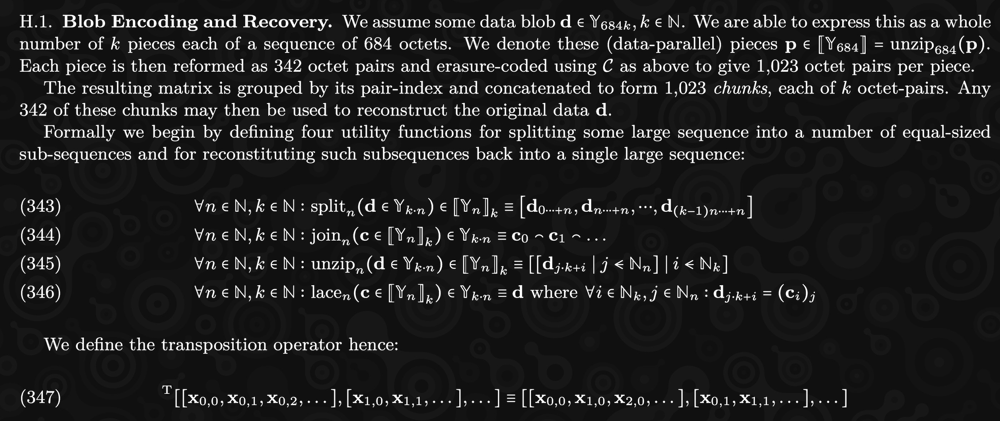
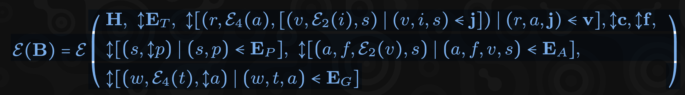
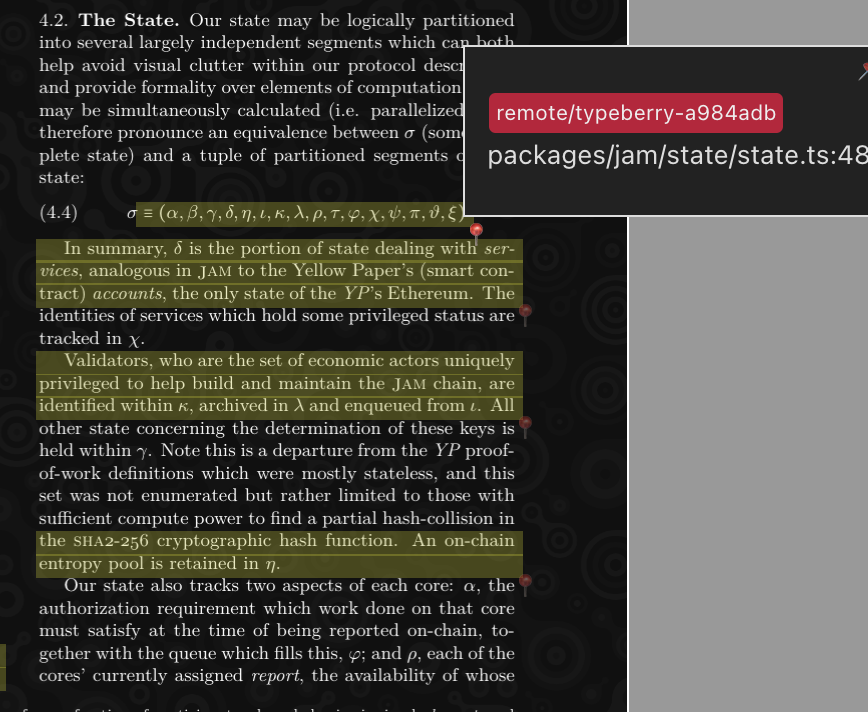

<!DOCTYPE html>
<html lang="en">

<head>
  <meta charset="utf-8" />
  <meta name="viewport" content="width=device-width, initial-scale=1.0, maximum-scale=1.0, user-scalable=no" />

  <title>Yo dawg, I heard yo like JAM</title>
  <link rel="icon" href="./../../assets/favicon.svg" />
  <link rel="shortcut icon" href="./../../assets/favicon.png" />
  <link rel="stylesheet" href="./../../dist/reset.css" />
  <link rel="stylesheet" href="./../../dist/reveal.css" />
  <link rel="stylesheet" href="./../.././assets/styles/PBA-theme.css" id="theme" />
  <link rel="stylesheet" href="./../../css/highlight/shades-of-purple.css" />

  <link rel="stylesheet" href="./../.././assets/styles/custom-classes.css" />

</head>

<body class="site">
  <header class="site-header">
    <!-- This logo is a link only on the watching server, not the production build -->
    <a href="">
      
    </a>
  </header>
  <main class="reveal">
    <article class="slides">
      <section  data-markdown><script type="text/template">

# Not about JAM
</script></section><section  data-markdown><script type="text/template">
#### What is this talk about?

Our aproach <br />
to learning how <br />
to implement JAM

<aside class="notes"><p>We want to share with you how we approached building JAM from scratch in TypeScript
(crazy idea, I know) in hope to encourage you to do the same in your language
of choice.</p>
</aside></script></section><section  data-markdown><script type="text/template">
#### How do you even start?

- The Gray Paper
- JAM Lectures (youtube)
- The Gray Paper
- Element Rooms (#jam:polkadot.io, #graypaper:polkadot.io)
- The Gray Paper
- Did I mention the Gray Paper already?

<aside class="notes"><p>We want to share with you how we approached building JAM from scratch in TypeScript
(crazy idea, I know) in hope to encourage you to do the same in your language
of choice.</p>
</aside></script></section><section ><section data-markdown><script type="text/template">
#### Gray Paper - First impression



Gray Paper is a description of the protocol using language-agnostic,
mathematical notation.

<aside class="notes"><p>As you probably already know, the main source of truth for JAM is the Gray Paper.
It&#39;s a formal specification of the protocol, which uses a mix of a prose and math
notation to describe the IMPORTANT (consensus-sensitive) details in a language
agnostic way.</p>
<p>So when you start off the first thing you&#39;ll see is something like.</p>
</aside></script></section><section data-markdown><script type="text/template">
#### Gray Paper - The scary stuff



Block encoding description.

<aside class="notes"><p>If you go deeper, things might get a little bit more scary though! :)</p>
</aside></script></section><section data-markdown><script type="text/template">
#### Gray Paper - Even worse (!)


A recursive step-by-step invocation function describing PVM.

<aside class="notes"><p>Or even this!</p>
</aside></script></section></section><section ><section data-markdown><script type="text/template">
#### Bottom-up approach

Start from the very beginning and go through the formulas 1 by 1

<!-- .element: class="fragment" -->

- ✅ straightforward to start
- ✅ works equally well if you do and don't have experience
- ❌ you might get stuck
- ❌ depending on the language you might end up with inefficient architecture

<!-- .element: class="fragment" -->
</script></section><section data-markdown><script type="text/template">
### Top-down approach

Think high level about the client architecture first

<!-- .element: class="fragment" -->

- ✅ you MIGHT build a very efficient client
- ❌ requires a lot of experience
- ❌ extremely easy to get wrong

<!-- .element: class="fragment" -->
</script></section><section data-markdown><script type="text/template">
### Reality (our approach)

- Alternate between bottom-up and top-down.

- Points to consider:
  - Team composition
  - Understanding of the domain
  - Understanding the language/technology
</script></section></section><section  data-markdown><script type="text/template">
#### Who are we?

- JAM implementation in TypeScript
- JAM tooling (also TS)

- Dev team:
  - 1 dev with blockchain background
  - 1-3 TS devs with no prior blockchain background
  - 2 frontend developers
</script></section><section ><section data-markdown><script type="text/template">
### How did we actually start?

- 📖 Reading the prose of Gray Paper.

  - Getting the gist of what JAM is about.

- 🤖 Figured, we will be working with raw bytes a lot
  - `Bytes<N>` and `BytesBlob` helpers.

<!-- .element: class="fragment" -->

- 💾 Reading (not running!) JSON tests (w3f/jamtestvectors)

  - Type-safe custom parser.

- ⏱️ Performance measurements from day 1
  - Micro-benchmarks for "low-level" stuff.

<!-- .element: class="fragment" -->

<aside class="notes"><ul>
<li>Reading/loading JSON tests allows us to get some understanding of what&#39;s
going to be needed and how things might need to be stitched together.
While it seems super simple <code>JSON.parse</code> we&#39;ve learned a ton just
by trying to model the data structures in a typesafe way.</li>
<li>Obviously the choice of the language dictates the steps that you need to
tackle first. If you have support for bytes natively - why bother :)</li>
</ul>
</aside></script></section><section data-markdown><script type="text/template">
#### `Bytes` helpers

```ts
export class Bytes<T extends number> extends BytesBlob {
  readonly length: T;
  ...
  static fromBlob<N extends number>(len: N, v: Uint8Array): Bytes<N> {...}
  static fromNumbers<N extends number>(len: N, v: number[]): Bytes<N> {...}
  static zero<N extends number>(len: N): Bytes<N> {...}
  static fill<N extends number>(len: N, input: U8): Bytes<N> {...}
  static parseBytes<N extends number>(len: N, v: string): Bytes<N> {...}

  /** Compare the sequence to another one. */
  isEqualTo(other: Bytes<T>): boolean {
    check(this.length === other.length, "Comparing incorrectly typed bytes!");
    return u8ArraySameLengthEqual(this.raw, other.raw);
  }
}
```
</script></section><section data-markdown><script type="text/template">
### Benchmarking examples

- 🤔 What's the most performant way to represent a `Bytes<32>` in TypeScript?
- 🤠 We need data structures! `Set`, `Dictionary`
- 🚄 Hashing / Crypto - WASM gives us huge gains.

<aside class="notes"><p>While it&#39;s not strictly necessary to be a performant client for the first milestones
we are focusing on the performance as we go since our ambitions reach beyond M2/MN2.</p>
</aside></script></section><section data-markdown><script type="text/template">
### Benchmarking

```ts
type ArrayHash = Uint8Array;
type NumberHash = number[];
type StringHash = string[];
type PackedNumberHash = number[];
type BigIntHash = bigint[];
```

Which one is the fastest?
</script></section><section data-markdown><script type="text/template">
# OBVIOUSLY IT DEPENDS!

- comparison?
- ordering?
- memory consumption?
- string-parsing?
- worker-threads passing?

The trade-offs of time-investement might be completely different for your
language of choice. But the optimisation goal always matters.
</script></section></section><section ><section data-markdown><script type="text/template">
#### Implementation as exploration

- While re-reading the Gray Paper we started composing the low-level structures
  and modeling the initial (very rough) architecture.
- Some other structures were composed based on the W3F JSON test vectors
  and later fact-checked with the Gray Paper.

<br />

- ✅ GP-navigation skills
- ✅ Detecting language-specific caveats
- ✅ Just start coding.

<aside class="notes"><p>By searching the structures in the Gray Paper we were gaining better knowledge
about the structure of the paper.</p>
</aside></script></section><section data-markdown><script type="text/template">
### Header code sample

```ts
export class Header extends WithDebug {
  ...
  /**
   * `H_p`: Hash of the parent header.
   *
   * In case of the genesis block, the hash will be zero.
   */
  parentHeaderHash: HeaderHash = Bytes.zero(HASH_SIZE).asOpaque();
  /** `H_r`: The state trie root hash before executing that block. */
  priorStateRoot: StateRootHash = Bytes.zero(HASH_SIZE).asOpaque();
  /** `H_x`: The hash of block extrinsic. */
  extrinsicHash: ExtrinsicHash = Bytes.zero(HASH_SIZE).asOpaque();
  /** `H_t`: JAM time-slot index. */
  timeSlotIndex: TimeSlot = tryAsTimeSlot(0);
  ...
}
```
</script></section><section data-markdown><script type="text/template">
#### Block code sample

```ts
/**
 * The block consists of the header and some external input data (extrinsic).
 *
 * `B = (H, E)`
 * https://graypaper.fluffylabs.dev/#/579bd12/089900089900
 */
export class Block extends WithDebug {
  ...
  constructor(
    /** `H`: Block header. */
    public readonly header: Header,
    /** `E`: Extrinsic data. */
    public readonly extrinsic: Extrinsic,
  ) { ... }
}
```
</script></section><section data-markdown><script type="text/template">
#### Gray Paper Reader


</script></section></section><section ><section data-markdown><script type="text/template">
#### In the search of unknown-unknowns

- 😎 known-knowns: Things we are aware of and understand.
- 😱 known-**unknowns**: Things we are aware of but don't fully understand.
- 🤯 **unknown-unknowns**: Things we are not even aware exist, so we cannot prepare
  for them.

<aside class="notes"><p>While you gain understanding of the Gray Paper and the overall domain, you start
to realize that there are things that you have to do that you didn&#39;t even consider
ealier. These unknown-unknowns turn into known-unknowns.</p>
</aside></script></section><section data-markdown><script type="text/template">
### How to proceed?

1. Depth-first mode:
   1. Pick a known-know.
   1. Research it and uncover known-**\*unknowns**.
   1. Add them to the list.
   1. If you have enough items on the list:
      - go to (2) otherwise go deeper.
2. Breadth-first mode:
   1. Parallelize the work
   1. Go back to (1.) if you run out of tasks.

<aside class="notes"><ul>
<li>After we got enough <strong>known-unknowns</strong> we went into breadth-first mode</li>
<li>and parallelized the work.</li>
</ul>
</aside></script></section></section><section ><section data-markdown><script type="text/template">
### First "proper" tasks

- Codec
- Merkleization
- PVM
- State transitions
- Running test vectors **\***

Gav's notes on this: <br />
https://hackmd.io/@polkadot/jamprize#Advice

<aside class="notes"><ul>
<li>We figured implementing for JSON test vectors will be simple, so we initially
went with things that we believed are going to be hard :)</li>
</ul>
</aside></script></section><section data-markdown><script type="text/template">
### First tasks - take aways

- ❌ Don't rely ONLY on JSON test vectors.
- ✅ Invest in your own unit testing suite.

<aside class="notes"><ul>
<li>JSON tests are work in progress and will change.</li>
</ul>
</aside></script></section></section><section ><section data-markdown><script type="text/template">
### PVM - alternative implementation

- AssemblyScript - sub-set of TypeScript, can be compiled to WASM
- Since optimizing stuff to WASM will be needed it was a fun experiment
  to learn AS via PVM.

Game of life demo: https://todr.me/anan-as/conway.html
</script></section><section data-markdown><script type="text/template">
### Second PVM - Why?

- Fuzz testing between the two implementations found us a ton of bugs.
- PVM debuggger was extremely handy in identifying differences.
- More work, but extremely helpful to share experiences and PoVs.

PVM debugger demo: https://pvm.fluffylabs.dev
</script></section><section data-markdown><script type="text/template">
### PVM take aways

- 🤠 Building an interpreter is fairly easy (common sense).
- 🫣 Making it fully compatbile with GP is harder (focus on the formulas).
- ☠️ Polkadot-level performance (recompiler) - seems very time-consuming.

**\*** There is a Non-PVM Validating Node Path though.
</script></section></section><section  data-markdown><script type="text/template">
### Open ideas

- ⁉️ WASM to PVM recompiler?
  - AssemblyScript JAM SDK!
- ⁉️ PVM JAM-Client-Plugin support?
  - Non-core code: RPC, indexers, protocol extensions, etc.
- ⁉️ What components does our Web3 stack miss?
  - Should "Your project is just a web2 database?" be the answer?
</script></section><section  data-markdown><script type="text/template">
# Questions?
</script></section>
    </article>
  </main>

  <script src="./../../dist/reveal.js"></script>

  <script src="./../../plugin/markdown/markdown.js"></script>
  <script src="./../../plugin/highlight/highlight.js"></script>
  <script src="./../../plugin/zoom/zoom.js"></script>
  <script src="./../../plugin/notes/notes.js"></script>
  <script src="./../../plugin/math/math.js"></script>

  <script src="./../../assets/plugin/mermaid.js"></script>
  <script src="./../../assets/plugin/mermaid-theme.js"></script>

  <script src="./../../assets/plugin/chart/chart.js"></script>
  <script src="./../../assets/plugin/chart/chart.min.js"></script>

  <script src="./../../assets/plugin/tailwindcss.min.js"></script>

  <script>
    function extend() {
      var target = {};
      for (var i = 0; i < arguments.length; i++) {
        var source = arguments[i];
        for (var key in source) {
          if (source.hasOwnProperty(key)) {
            target[key] = source[key];
          }
        }
      }
      return target;
    }

    // default options to init reveal.js
    var defaultOptions = {
      controls: true,
      progress: true,
      history: true,
      center: true,
      transition: 'default', // none/fade/slide/convex/concave/zoom
      slideNumber: true,
      mermaid: {
        startOnLoad: false,
        logLevel: 3,
        theme: 'base',
        themeVariables: {
          primaryColor: purple,
          primaryTextColor: white,
          primaryBorderColor: pink,
          lineColor: pink,
          secondaryColor: lightPurple,
          tertiaryColor: lightPurple,
        },
      },
      chart: {
        defaults: {
          color: 'lightgray', // color of labels
          scale: {
            beginAtZero: true,
            ticks: { stepSize: 1 },
            grid: { color: "lightgray" }, // color of grid lines
          },
        },
        line: { borderColor: ["#ccc", "#E6007A", "#6D3AEE"], "borderDash": [[5, 10], [0, 0]] },
        bar: { backgroundColor: ["#ccc", "#E6007A", "#6D3AEE"] },
      },
      plugins: [
        RevealMarkdown,
        RevealHighlight,
        RevealZoom,
        RevealNotes,
        RevealMath,
        RevealMermaid,
        RevealChart
      ]
    };

    // options from URL query string
    var queryOptions = Reveal().getQueryHash() || {};

    var options = extend(defaultOptions, {"width":1400,"height":900,"margin":0,"minScale":0.2,"maxScale":2,"transition":"none","controls":true,"progress":true,"center":true,"slideNumber":true,"backgroundTransition":"fade"}, queryOptions);
  </script>


  <script>
    Reveal.initialize(options);
  </script>
</body>

</html>
